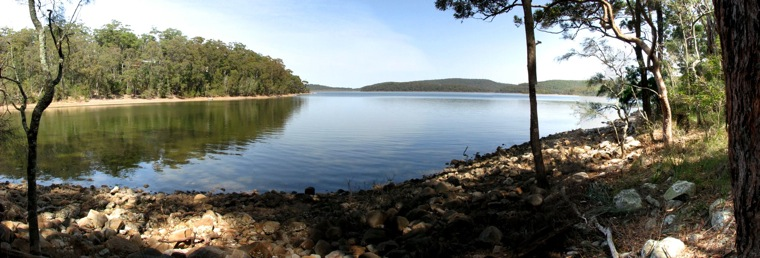

Some activities at and around Aqua Vista
- Enjoy the panoramic views
- Birdwatching
- Laze on your own private veranda, gazing out over the lake and the forest or read one of the available books
- Watch one of the DVD’s or you could hire one at the general store
- Go on a night walk: find glow worms, possums and owls
- Star gazing
- Canoeing and swimming in the lake
- Kayak around the edge of the lake and spot the migrating winter birds, water birds like the graceful pelicans.
Some activities close by
- Have a fantastic coffee at Frothy Coffee & Boatshed
- Go fishing in Smiths Lake
- Hire a tinnie, canoe, kayak or a catamaran at Frothy Coffee
- At the Lakeside Reserve there are free BBQ’s, public toilets and a children’s play area, sandy beach, watch the pelicans
- Visit the Pacific Palms Bowling Club for reasonable priced meals and Friday night entertainment; courtesy bus available
- The Lakes Way Café in the heart of Smiths Lake Village is perfect for a cappuccino and luscious treats or perhaps take in a relaxed breakfast or light lunch
- For gourmet dinners visit Blueys Retreat resort in Pacific Palms
- Great surfing at the famous beaches in Pacific Palms: Blueys Beach, Boomerang Beach and Elisabeth Beach, only 7 minutes away
- 5 minutes drive to beautiful Cellito Beach, also known as Sandbar, accessed by a rainforest boardwalk
- Go for a great game of Golf at the Sandbar Golf Course
- Set out from Elizabeth Beach and walk up through open rainforest onto sea cliffs with special views out to the ocean and wander through a mossy rain forest with rocky outcrops and unusual trees not common to the coast, loop back along the Wallis Lake to Elizabeth Beach
- Walk into Booti Booti National Park
- Wallis Lake flows out to the ocean through Forster/Tuncurry and is also great for water sports and fishing. It is very famous for its divine oysters
- Coomba is a charming village nestled on the shores of Wallis Lake, just 20km west off The Lakes Way. Myall Lake is predominantly fresh water at the Pacific Palms end, great for boating and the kayaking enthusiast, as well as naturalists alike. Surrounded by the Myall Lakes National Park
- Kangaroos are common in large numbers if you happen to visit the pretty village of Coomba Park around sunset
- Seal Rocks has a number of excellent beaches for both fishing and surfing, as well as the historic Lighthouse. It is also an important Marine Sanctuary for the now protected, but critically endangered Gray Nurse Shark. Drive south and turnoff at Bungwahl to experience this picturesque and unique old fishing village
- Visit the Magnificent Sugar Loaf Point Lighthouse at Seals Rocks, enjoy the stroll up the track the view is spectacular. Perfect location for whale watching ! Enjoy the natural rock formation, when the seas are high the rock produces a spectacular blowhole just below the light house
- Take a trip to the Wallingat Forest & visit Whoota Whoota lookout; nothing captures the area like this mountain, beneath your feet is the Wallis with all its river systems visible to the eye and the view out to sea is stunning. Look to the south and you can see Smiths and Myall Lakes all the way to Port Stephens on a clear day. To the north you can see Crowdy Head and beyond
- Visit the toymakers on Sugar Creek road, watch the toymaker at work.Something special is always found here
- Booti Booti and Myall lakes National Parks are great for the 4WD enthusiast.
Some activities a little further afield
- Forster (25 minutes). There are fantastic restaurants and cafes in Forster featuring a range of food including organic, vegan, French, Indian, Italian, Thai and Chinese. The Stockland Shopping Centre caters to everyone’s needs
- Go for a cruise with Amaroo Cruises and see dolphins and in the season whales.
- Mungo Brush National Park
- Nabiac Motor Museum
- Markets every weekend in different locations: Pacific Palms, Forster, Tuncurry
- Farmers Markets: Forster
- Family Funparks: The Big Buzz and Ton O’ Fun (just past Tuncurry).
